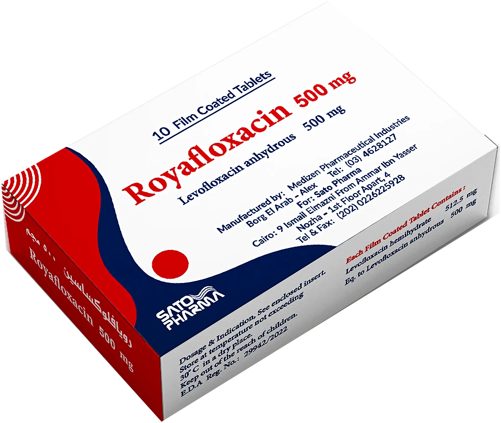
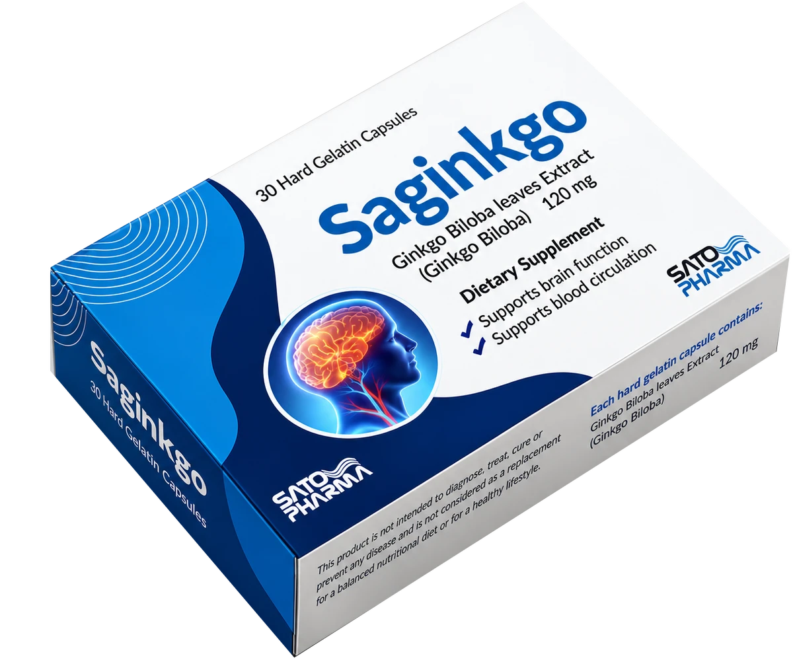
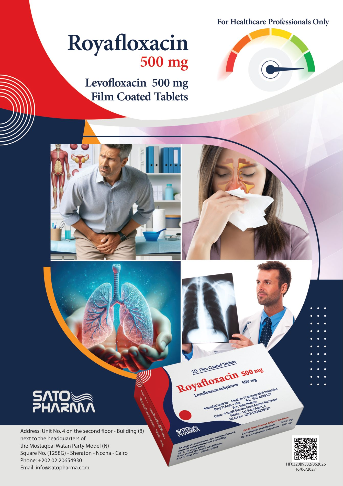
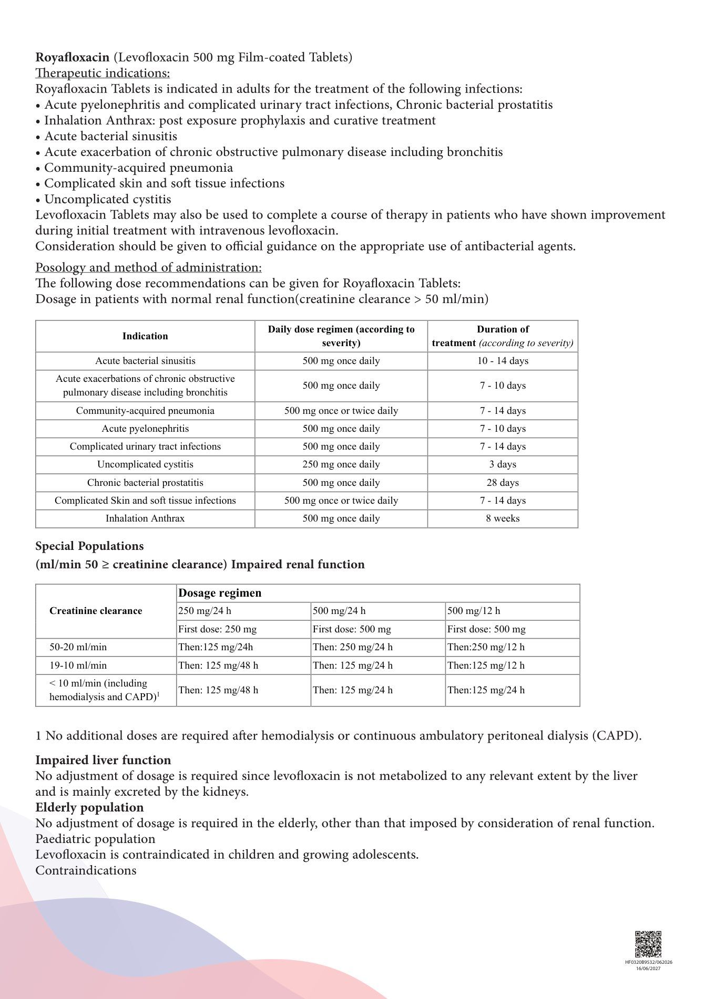

Royafloxacin in brief, from the approved leaflet.
The full approved text follows below.
Royafloxacin tablets are indicated in adults for the treatment of the following infections:
Levofloxacin tablets may also be used to complete a course of therapy in patients who have shown improvement during initial treatment with intravenous levofloxacin.
Consideration should be given to official guidance on the appropriate use of antibacterial agents.
Dosage in patients with normal renal function (creatinine clearance > 50 ml/min). Daily dose and duration according to severity.
| Creatinine clearance | Dosage regimen | ||
|---|---|---|---|
| 250 mg/24 h | 500 mg/24 h | 500 mg/12 h | |
| First dose | 250 mg | 500 mg | 500 mg |
| 20–50 ml/min | then 125 mg/24 h | then 250 mg/24 h | then 250 mg/12 h |
| 10–19 ml/min | then 125 mg/48 h | then 125 mg/24 h | then 125 mg/12 h |
| < 10 ml/min (incl. hemodialysis and CAPD)1 | then 125 mg/48 h | then 125 mg/24 h | then 125 mg/24 h |
1 No additional doses are required after hemodialysis or continuous ambulatory peritoneal dialysis (CAPD).
No adjustment of dosage is required since levofloxacin is not metabolised to any relevant extent by the liver and is mainly excreted by the kidneys.
No adjustment of dosage is required in the elderly, other than that imposed by consideration of renal function.
Levofloxacin is contraindicated in children and growing adolescents.
Royafloxacin tablets must not be used:
The use of levofloxacin should be avoided in patients who have experienced serious adverse reactions in the past when using quinolone or fluoroquinolone containing products. Treatment of these patients with levofloxacin should only be initiated in the absence of alternative treatment options and after careful benefit/risk assessment.
Cases of prolonged (continuing for months or years), disabling and potentially irreversible serious adverse drug reactions affecting different, sometimes multiple, body systems (including musculoskeletal, nervous, psychiatric and senses) have been reported in patients receiving quinolones and fluoroquinolones irrespective of their age and pre-existing risk factors. There are no pharmacological treatments established to be effective treatments of the symptoms of long lasting or disabling side effects associated with fluoroquinolones. Levofloxacin should be discontinued immediately at the first signs or symptoms of any serious adverse reaction and patients should be advised to contact their prescriber for advice, so that symptoms can be appropriately investigated and to avoid further exposure which could potentially worsen adverse reactions.
Methicillin-resistant S. aureus are very likely to possess co-resistance to fluoroquinolones, including levofloxacin. Therefore levofloxacin is not recommended for the treatment of known or suspected MRSA infections unless laboratory results have confirmed susceptibility of the organism to levofloxacin (and commonly recommended antibacterial agents for the treatment of MRSA-infections are considered inappropriate).
Levofloxacin may be used in the treatment of Acute Bacterial Sinusitis and Acute Exacerbation of Chronic Bronchitis when these infections have been adequately diagnosed.
Resistance to fluoroquinolones of E. coli – the most common pathogen involved in urinary tract infections – varies across the European Union. Prescribers are advised to take into account the local prevalence of resistance in E. coli to fluoroquinolones.
Inhalation Anthrax: Use in humans is based on in vitro Bacillus anthracis susceptibility data and on animal experimental data together with limited human data. Treating physicians should refer to national and/or international consensus documents regarding the treatment of anthrax.
Tendinitis and tendon rupture (especially but not limited to Achilles tendon), sometimes bilateral, may occur as early as within 48 hours of starting treatment with quinolones and fluoroquinolones and have been reported to occur even up to several months after discontinuation of treatment in patients receiving daily doses of 1000 mg levofloxacin. The risk of tendinitis and tendon rupture is increased in older patients, patients with renal impairment, patients with solid organ transplants, and those treated concurrently with corticosteroids. Therefore, concomitant use of corticosteroids should be avoided. Tendinitis was reported in patients with CF receiving (levofloxacin) as an uncommon adverse reaction during clinical trials. The daily dose should be adjusted in elderly patients based on creatinine clearance.
At the first sign of tendinitis (e.g. painful swelling, inflammation) the treatment with levofloxacin should be discontinued and alternative treatment should be considered. The affected limb(s) should be appropriately treated (e.g. immobilisation). Corticosteroids should not be used if signs of tendinopathy occur.
Cases of myoclonus have been reported in patients receiving levofloxacin (see section 4.8). The risk of myoclonus is increased in older patients, and in patients with renal impairment if the dose of levofloxacin is not adjusted as per the creatinine clearance.
Levofloxacin should be discontinued immediately at the first occurrence of myoclonus and appropriate treatment should be initiated.
Diarrhea, particularly if severe, persistent and/or bloody, during or after treatment with levofloxacin (including several weeks after treatment), may be symptomatic of Clostridium difficile-associated disease (CDAD). CDAD may range in severity from mild to life threatening, the most severe form of which is pseudomembranous colitis (see section 4.8). It is therefore important to consider this diagnosis in patients who develop serious diarrhoea during or after treatment with levofloxacin. If CDAD is suspected or confirmed, levofloxacin tablets should be stopped immediately and appropriate treatment initiated without delay (e.g. oral metronidazole or vancomycin). Medicinal products inhibiting the peristalsis are contraindicated in this clinical situation.
Quinolones may lower the seizure threshold and may trigger seizures. Levofloxacin is contraindicated in patients with a history of epilepsy (see section 4.3) and, as with other quinolones, should be used with extreme caution in patients predisposed to seizures, or concomitant treatment with active substances that lower the cerebral seizure threshold, such as theophylline (see section 4.5). In case of convulsive seizures (see section 4.8), treatment with levofloxacin should be discontinued.
Patients with latent or actual defects in glucose-6-phosphate dehydrogenase activity may be prone to hemolytic reactions when treated with quinolone antibacterial agents. Therefore, if levofloxacin has to be used in these patients, potential occurrence of haemolysis should be monitored.
Since levofloxacin is excreted mainly by the kidneys, the dose of levofloxacin tablets should be adjusted in patients with renal impairment.
Levofloxacin can cause serious, potentially fatal hypersensitivity reactions (e.g. angioedema to anaphylactic shock), occasionally following the initial dose (see section 4.8). Patients should discontinue treatment immediately and contact their physician or an emergency physician, who will initiate appropriate emergency measures.
Severe cutaneous adverse reactions (SCARs) including toxic epidermal necrolysis (TEN: also known as Lyell's syndrome), Stevens Johnson syndrome (SJS) and drug reaction with eosinophilia and systemic symptoms (DRESS), which could be life-threatening or fatal, have been reported with levofloxacin (see section 4.8). At the time of prescription, patients should be advised of the signs and symptoms of severe skin reactions, and be closely monitored. If signs and symptoms suggestive of these reactions appear, levofloxacin should be discontinued immediately and an alternative treatment should be considered. If the patient has developed a serious reaction such as SJS, TEN or DRESS with the use of levofloxacin, treatment with levofloxacin must not be restarted in this patient at any time.
As with all quinolones, disturbances in blood glucose, including both hypoglycaemia and hyperglycaemia have been reported, usually in diabetic patients receiving concomitant treatment with an oral hypoglycaemic agent (e.g., glibenclamide) or with insulin. Cases of hypoglycaemic coma have been reported. In diabetic patients, careful monitoring of blood glucose is recommended.
Levofloxacin tablets treatment should be stopped immediately if a patient reports blood glucose disturbance and alternative nonfluoroquinolone antibacterial therapy should be considered.
Photosensitization has been reported with levofloxacin. It is recommended that patients should not expose themselves unnecessarily to strong sunlight or to artificial UV rays (e.g. sunray lamp, solarium), during treatment and for 48 hours following treatment discontinuation in order to prevent photosensitization.
Due to possible increase in coagulation tests (PT/INR) and/or bleeding in patients treated with levofloxacin in combination with a vitamin K antagonist (e.g. warfarin), coagulation tests should be monitored when these drugs are given concomitantly.
Psychotic reactions have been reported in patients receiving quinolones, including levofloxacin. In very rare cases these have progressed to suicidal thoughts and self-endangering behavior – sometimes after only a single dose of levofloxacin (see section 4.8). In the event that the patient develops these reactions, levofloxacin should be discontinued immediately at the first signs or symptoms of these reactions and patients should be advised to contact their prescriber for advice.
Alternative nonfluoroquinolone antibacterial therapy should be considered, and appropriate measures instituted. Caution is recommended if levofloxacin is to be used in psychotic patients or in patients with a history of psychiatric disease.
Caution should be taken when using fluoroquinolones, including levofloxacin, in patients with known risk factors for prolongation of the QT interval such as, for example:
Elderly patients and women may be more sensitive to QTc-prolonging medications. Therefore, caution should be taken when using fluoroquinolones, including levofloxacin, in these populations.
Cases of sensory or sensorimotor polyneuropathy resulting in paraesthesia, hypoesthesia, dysesthesia, or weakness have been reported in patients receiving quinolones and fluoroquinolones.
Patients under treatment with levofloxacin should be advised to inform their doctor prior to continuing treatment if symptoms of neuropathy such as pain, burning, tingling, numbness, or weakness develop in order to prevent the development of potentially irreversible condition.
Cases of hepatic necrosis up to fatal hepatic failure have been reported with levofloxacin, primarily in patients with severe underlying diseases, e.g. sepsis (see section 4.8). Patients should be advised to stop treatment and contact their doctor if signs and symptoms of hepatic disease develop such as anorexia, jaundice, dark urine, pruritus or tender abdomen.
Fluoroquinolones, including levofloxacin, have neuromuscular blocking activity and may exacerbate muscle weakness in patients with myasthenia gravis. Postmarketing serious adverse reactions, including deaths and the requirement for respiratory support, have been associated with fluoroquinolone use in patients with myasthenia gravis. Levofloxacin is not recommended in patients with a known history of myasthenia gravis.
If vision becomes impaired or any effects on the eyes are experienced, an eye specialist should be consulted immediately.
The use of levofloxacin, especially if prolonged, may result in overgrowth of non-susceptible organisms. If superinfection occurs during therapy, appropriate measures should be taken.
Epidemiologic studies report an increased risk of aortic aneurysm and dissection, particularly in elderly patients, and of aortic and mitral valve regurgitation after intake of fluoroquinolones. Cases of aortic aneurysm and dissection, sometimes complicated by rupture (including fatal ones), and of regurgitation/incompetence of any of the heart valves have been reported in patients receiving fluoroquinolones (see section 4.8).
Therefore, fluoroquinolones should only be used after a careful benefit-risk assessment and after consideration of other therapeutic options in patients with positive family history of aneurysm disease or congenital heart valve disease, or in patients diagnosed with pre-existing aortic aneurysm and/or dissection or heart valve disease, or in presence of other risk factors or conditions predisposing
The risk of aortic aneurysm and dissection, and their rupture may also be increased in patients treated concurrently with systemic corticosteroids.
In case of sudden abdominal, chest or back pain, patients should be advised to immediately consult a physician in an emergency department.
Patients should be advised to seek immediate medical attention in case of acute dyspnoea, new onset of heart palpitations, or development of oedema of the abdomen or lower extremities.
Bone marrow failure including leukopenia, neutropenia, pancytopenia, haemolytic anaemia, thrombocytopenia, aplastic anaemia, or agranulocytosis may develop during treatment with levofloxacin (see section 4.8). If any of these blood disorders is suspected, blood counts should be monitored. In case of abnormal results, discontinuation of treatment with levofloxacin should be considered.
In patients treated with levofloxacin, determination of opiates in urine may give false-positive results. It may be necessary to confirm positive opiate screens by more specific method.
Levofloxacin may inhibit the growth of Mycobacterium tuberculosis and, therefore, may give false-negative results in the bacteriological diagnosis of tuberculosis.
There are limited amount of data with respect to the use of levofloxacin in pregnant women. Animal studies do not indicate direct or indirect harmful effects with respect to reproductive toxicity (see section 5.3). However, in the absence of human data and due to that experimental data suggest a risk of damage by fluoroquinolones to the weight-bearing cartilage of the growing organism, levofloxacin must not be used in pregnant women.
Levofloxacin tablets are contraindicated in breast-feeding women. There is insufficient information on the excretion of levofloxacin in human milk; however other fluoroquinolones are excreted in breast milk. In the absence of human data and due to that experimental data suggest a risk of damage by fluoroquinolones to the weight-bearing cartilage of the growing organism, levofloxacin must not be used in breast-feeding women.
Levofloxacin caused no impairment of fertility or reproductive performance in rats.
Levofloxacin has minor or moderate influence on the ability to drive and use machines. Some undesirable effects (e.g. dizziness/vertigo, drowsiness, visual disturbances) may impair the patient's ability to concentrate and react, and therefore may constitute a risk in situations where these abilities are of special importance (e.g. driving a car or operating machinery).
The information given below is based on data from clinical studies in more than 8300 patients and on extensive post marketing experience.
Frequencies are defined using the following convention: very common (≥ 1/10), common (≥ 1/100 to < 1/10), uncommon (≥ 1/1,000 to < 1/100), rare (≥ 1/10,000 to < 1/1,000), very rare (< 1/10,000), not known (cannot be estimated from the available data). Within each frequency grouping, undesirable effects are presented in order of decreasing seriousness.
| System organ class | Common (≥ 1/100 to < 1/10) |
|---|---|
| Psychiatric disorders | Insomnia |
| Nervous system disorders | Headache Dizziness |
| Gastrointestinal disorders | Diarrhoea Vomiting Nausea |
| Hepatobiliary disorders | Hepatic enzyme increased (ALT/AST, alkaline phosphatase, GGT) |
| General disorders and administration site conditions | Applies to IV form only: infusion site reaction (pain, reddening) |
Healthcare professionals are asked to report any suspected adverse drug reactions to the Egyptian Pharmacovigilance Center (EPVC).
pv.followup@edaegypt.gov.eg · www.edaegypt.gov.eg
Always read the full prescribing information.
Open approved leafletSaginkgo in brief, from the approved flyer.
References are listed at the end of this page.
Response rates, defined as clinician’s global impression (CGI) rated “much improved” or “very much improved”, or patient’s rating of NAS improvement of at least 50%.
CGI: clinician’s global impression; NAS: numeric analogue scale.
Saginkgo helps alleviate vertigo and tinnitus, while improving symptoms of dizziness and fatigue.